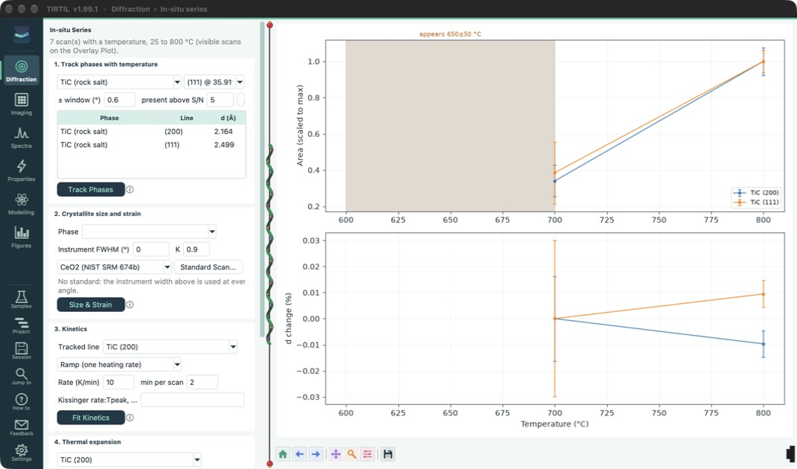
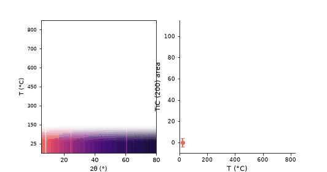

Diffraction
In-situ series
What changes with temperature, and when.

Steps
Track PhasesPick a phase and one of its lines. Its area is followed through every scan, with error bars, and the onset temperature is given.Size & StrainCrystallite size (Scherrer, Williamson-Hall) against T. The instrument width comes from a standard scan or a number you type.Fit KineticsKinetics: JMAK on one ramp, Avrami for isothermal holds, Kissinger across heating rates.ExpansionThermal expansion α in ppm/K for c, a or a line. Jumps (water or terminations leaving) are marked.Animate Series...Save the whole series as a GIF or MP4 for a talk.
How it works

Worked example
TiC (200) area is zero up to 600 °C and grows after: the onset is 675 ± 25 °C (half the step between scans). c going from 21.80 Å at 25 °C to 21.99 Å at 300 °C is α = 0.19 / 21.80 / 275 K = 33 ppm/K.
In TIRTIL: How to (⌘/) › Try It With Example Data loads this example.